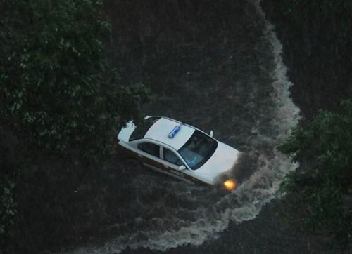
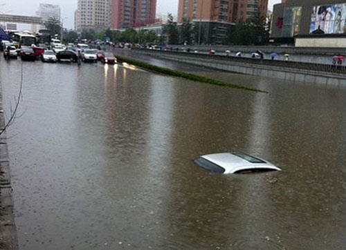

雨天行车涉水注意事项
涉水要一观二测三谨慎 雨天行车注意事项
相信这几天国内的大多数地区都在反复的遭受暴雨的“蹂躏”。一下雨特别是大暴雨就会给城市的排水系统造成比较大的负荷，如果积水不能及时排出就会使路面积水从而导致拥堵发生。那么在下雨的时候我们用车和开车需要注意点什么呢？我们这里给大家分类来说一下。
● 雨天行车前的准备
在雨季到来的时候我们要提前检查一下车辆的相关部件，比如雨刮器和雾灯，因为这两个零件在下雨的时候能帮助我们提升视线并对其他车辆进行提示。除了这两样我们还应该检查车辆的密封部件，比如天窗等，如果发现密封部件有损坏的地方请及时进行修理避免雨水进入车辆内部。
检查固然是第一位的，我们也可以使用一些其他的产品帮助我们在下雨的时候提高视线或者减少发生危险的概率。雨敌和晴雨挡就是两个非常好的小零件，有了他们的帮助车玻璃就会减少粘在上面的雨滴，而晴雨挡则可以帮助我们在下雨的时候进行车内与车外的空气交换，提高乘坐舒适性。
其实雨天行车做好提前准备就完全可以大大降低下雨对车辆和车内人员产生不好的影响，而多数情况4S店也会在雨季来临之前帮助您检查车辆的相关部件。此外，如果您还想了解更多雨天用车时的小窍门可以点击下面的文章了解。
● 下雨天开车注意事项
◆ 涉水前：一观二测三谨慎

大部分城市车主所驾驶的轿车涉水能力较差，所以不要冒险涉水，如果必须涉水，必须查看积水深度，是否有淤泥和障碍物。观察前车通过的路线和速度，并判断己车是否能通过。

这里有几点细节可以供大家参考：1、一般有浪花和漩涡的地方很可能有较大的石块或其他障碍物；2、水面较平静的地方一般水较深；3、水面开阔且有较均匀的碎浪花处，一般水较浅且水底多为碎石，是驾车通过的理想路线。
◆ 对自己的车的涉水有一定了解
如果路面上有积水而您又不知道能否过去的时候，可以通过以下两点进行判定：一是积水是否浸到车厢内的地板或排气管，二是积水是否超过轮胎中线。如果超过以上两个标准，那么你就别猛冲了，因为这一定会给你的车辆造成损失。
◆ 行驶积水路面：缓慢的匀速通过
正确操作方法一：入水前挂入最低挡位
手动或手自一体车型入水前应将挡位挂入一挡；自动变速器需挂入“L”挡；没有“L”需挂入“2”挡位。这样做的目的是通过使用车辆的最低挡，得到最慢的车速和最大的扭力。慢速行驶当然是为了防止水进入进气管；如果遇到障碍，低挡输出的最大扭力能使车辆越过障碍。
正确操作方法二：慢速过水、缓踩油门

入水时需要将车速尽可能减到最慢，因为当车头向下倾斜时水更容易进到进气管中，进气管少许进水会导致水附着在空气滤芯上，有时还会引起膨胀使进气阻力变大导致发动机熄火。入水后也要保持低速防止车前形成水波漫过进气管。缓踩油门是为了当遇到水下为泥沙时，避免车轮打滑失去抓地力甚至陷车。
◆ 在积水路面熄火就别尝试再启动了
并不说在积水路面熄火后不能再次打着火，因为多数驾驶员对涉水驾驶基本没有经验，因此盲目的打火很可能对车辆产生损失，建议在遇到这种情况的时候就直接拨打电话进行求助，虽然看似解决办法很弱智，但是这却能在最大程度保护你的车。
● 下雨之后对车辆进行检查
◆ 轻踏刹车踏板
驶出积水路面后，可以轻踏几次刹车踏板，这样做的目的是让刹车片与刹车盘发生摩擦，将附着上面的水蒸发或甩干，使其最快速的恢复制动效果。
◆ 检查发动机舱和车底
打开发动机盖检查发动机工作情况，查看水箱散热片上有无树叶之类的污物，轮胎有无损坏，底盘下面有无塑料袋之类脏物缠绕等。
◆ 洗车
建议车主在试过积水和下雨之后后去4S店和汽车美容店清洁车辆，以防沙粒、树叶等进入发动机进气系统造成发动机、电路以及车漆等零部件损坏。
● 如果车真的被淹了怎么理赔

如果你的车真的特别被的被水淹了，那也没关系我们可以通过保险公司进行理赔，但是前提是比必须上有相关的保险，也就是常说的“涉水险”。据了解这种保险在北方地区一般都不会上，主要的原因是北方地区几乎很少出现下暴雨淹车的情况，而在南方这个保险的投保数量还是比较多的。
不过这里我不想说投保了涉水险报保险公司怎么理赔，我要说的是这个涉水险的一些注意事项，有些保险公司在投保涉水险的嘶吼规定车辆被水淹之后车主不能自行发动车辆，如果因发动车辆导致的一些问题保险公司是不给予赔付的。另外，涉水险一般有20%的绝对免赔，也就是修车花100元，有20元你是要自己掏钱的，以上两点需要车主在投保涉水险的时候提前向保险公司咨询清楚。
我们从行车前的准备，雨天行车、涉水后的清洁以及车辆进水后的理赔四哥方面给大家介绍一些关于雨天行车和用车的注意事项，希望能给您一定的帮助。这里也给大家总结一下：雨天行车不是难事，细心、慢速以及善于观察都可以帮助你在雨天顺利的行车。
★惊天大雨之下 又该如何保护我们的爱车

星期四傍晚的这场惊天大雷雨，把南方遭遇的水灾场景瞬间搬到了京城，各大微博上更新的无数惊人“内涝”照片，更让人再次惊叹这座偌大的城市竟是如此的脆弱。加上正赶上下班高峰，仅用了不到一个小时二、三、四环和主要城市联络线的交通就已经陷入了近乎瘫痪的地步。
北京城因天气原因造成的交通瘫痪早已不是什么新鲜事，雨雪天气可以说已成为广大车主的梦魇！特别是面对突降的大雨和各个路桥效率不高的排水系统，不仅会让我们寸步难行，还有可能让我们精心保护的爱车遭遇灭顶之灾，广州浸泡在地下车库的多辆保时捷相信大家还记得。

难道我们在这种天气下就只能步行或骑自行车回家了吗？答案当然是否定的！因为只要做好必要的准备，我们驾驶的汽车并没有那么不堪一击！准备工作在买车之前就可以开始做了，汽车在雨季面临的最大挑战就是涉水。早年的汽车发动机技术都比较落后，不仅没有多气门双凸轮轴、可变进气、可变气门正时…进、排气效率也相当低，发动机工作效率也相当低。
据了解今天北京还有可能有大雨情况，今天为网友提供的这篇文章希望能为今天准备在路上驾车的朋友给予一些帮助。
而现在越来越多的汽车把发动机进气口安放在发动机盖内的侧前方，发动机可以很顺畅吸入新鲜空气，当然在涉水行驶的时候也很容易把雨水吸进发动机。在购车时一定要了解发动机进气口的位置和高度，在实际涉水时车头推起的大浪比这个高度还要高不少，所以还要计算进这部分的高度，一般轿车的安全涉水深度不应超过0.5米。虽然排气管口完全泡在水中，发动机仍可以正常启动和工作，但如果行驶一段时间后突然进入水中，处于高温状态的三元催化器很容易发生不可逆的损坏，更换三元催化器的费用可是相当惊人的！

在雨季到来之前需要特别注意轮胎的胎压和胎纹的深度，如果胎压过低不仅会影响车辆的行驶稳定性，还会延长刹车距离同时提高油耗；如果胎压过高不仅容易在高温天气中发生爆胎事故，还会降低轮胎的附着力，ABS防抱死刹车系统也容易变得过敏，对于雨天驾驶来说是相当危险的。
另外，还要检查刹车盘、刹车片的磨损情况，并及时进行更换。在干燥的情况下即便刹车片变薄了一些，也足以提供正常的刹车力度，而涉水行驶后刹车盘表面会包裹上一层水膜，水中的泥沙还会大大降低刹车片与刹车盘之间的摩擦力。虽然可以通过轻踩刹车来排除水分，但变薄的刹车片会使刹车踏板下沉，也就是踩起来感觉偏软，在刹车盘上的水分没有排除之前，还是存在着严重的隐患。
往往被人忽视的雨刷在豪雨如柱的时候就显出了至关重要的作用，夏天阳光的暴晒很容易让雨刷的橡胶材料迅速老化，自然也就不能良好的清除风挡玻璃上的雨水。应尽量避免在暴晒之后马上开启雨刷清洗风挡玻璃，以保持雨刷片的正常寿命，相比于雨刷片的价格，正确使用所带来的行车安全要有意义得多。
突降的雷雨会使气温迅速下降，即便开启空调，车内外的温差也相当大，潮湿的空气会在车窗玻璃上迅速罩上一层白膜，这是雨天驾驶的又一位隐形杀手。彻底的解决方法是使用除雾剂均匀的喷涂在风挡、车窗玻璃内侧，这种除雾剂还可以清除车外后视镜飞溅上的积水，做到把视线盲区降到最低。
对于常见的轿车、SUV来说还是要尽量避免涉水行驶，特别是在有一定深度的水中行驶。如果没有其他办法，在涉水行驶之前一定要看清路桥上积水深度指示，过膝的水深就应慎重通过了。对于路况不明的积水路段，通过之前最好用较长的木棍详细探探水深和地形，以防水中暗藏有坑、沟。
还是那句老话“快过沙子、慢过水”，涉水行驶时应使用1挡或D挡稳住油门通过，使发动机的动力刚好够抵消积水带来的巨大阻力为好，切记不要中途换挡、收油和突然加速。还要双手握住方向盘，平视对岸的物体，并及时修正行驶路线。如果是多车涉水行驶，还要等待前车完全通过积水路面后再行通过。在完成涉水之后，还需要在开阔地上彻底检查点火线（点火线圈）上是否有积水，变速箱有无进水的情况，水箱、冷凝器上是否沾有树叶、杂草等漂浮物。
意外总是有可能发生的，万一发动机在涉水途中意外熄火，绝对不能盲目再启动。此时，发动机的熄火有可能仅仅是空气滤芯被水完全堵死所致，如果再次启动，发动机的真空吸力就有可能把积水吸入。处于工作状态的发动机吸入雨水的后果是相当严重的，轻者气门断裂卡死在缸体里，大部分情况是缸体破裂、活塞连杆断裂，根本无法进行大修，只能直接更换，而更换发动机的费用一般都在整车价格的1/2-1/3之间。
遇到这种情况最好的解决方法就是及时通知保险公司，请保险公司把车拖出积水路段，并进行现场勘察、定损，由保险公司指定的4S店或修理厂进行故障检测和维修。当然前提是您及时投保了车辆涉水险，以车辆总价20万元计算，每年车辆涉水险的保费不过三、五百元左右，与其提供的充分保障相比，还是相当超值的险种。
总结起来，恶劣的雷雨天气应尽量避免开车出行，并注意日常的车辆保养，遇到积水路段尽量及时绕行，也可有效避免严重交通拥堵的发生。还要购买齐全相关的车辆保险，将车停放在正规的收费地面停车场，停放在地下停车场时一定要了解是否具有完备的排水系统，对于雷雨、地质状况复杂的地区来说，最好的停车地点还是停车楼。只有做好充分的准备工作和完备的善后工作，才能把恶劣天气造成的损失降到最低。 来源：汽车之家
|